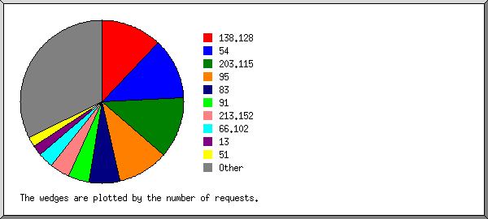
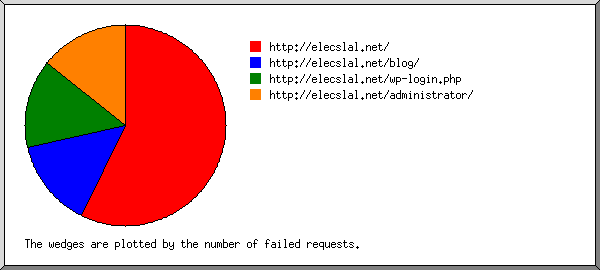
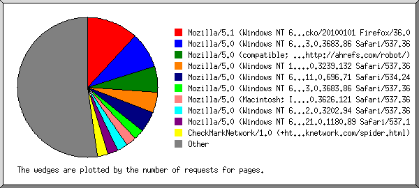
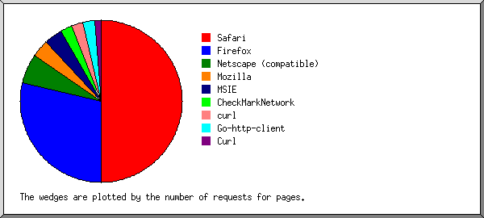
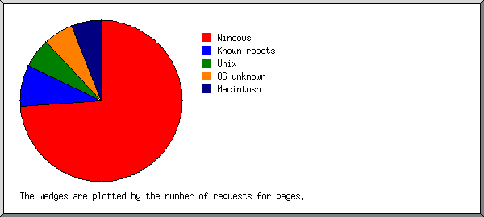
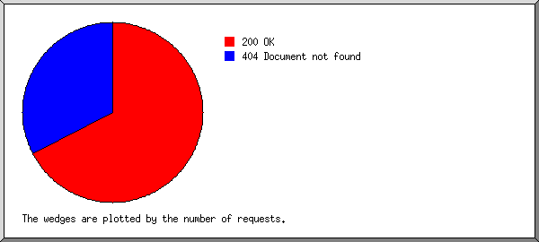
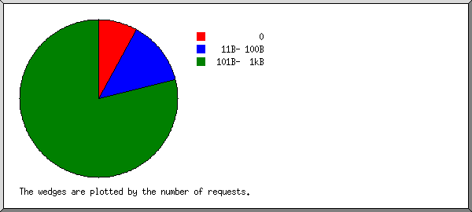
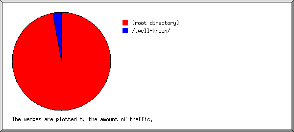
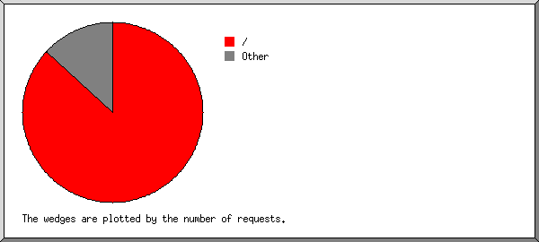

Web Server Statistics for elecslal.net
Web Server Statistics for elecslal.net
Program started on Sun, Mar 31 2019 at 6:20 PM.
Analyzed requests from Thu, Mar 28 2019 at 6:28 PM to Sun, Mar 31 2019 at 4:46 PM (2.93 days).
Web Server Statistics for elecslal.netProgram started on Sun, Mar 31 2019 at 6:20 PM.
Analyzed requests from Thu, Mar 28 2019 at 6:28 PM to Sun, Mar 31 2019 at 4:46 PM (2.93 days).
(Go To: Top | General Summary | Monthly Report | Daily Summary | Hourly Summary | Domain Report | Organization Report | Failed Referrer Report | Referring Site Report | Browser Report | Browser Summary | Operating System Report | Status Code Report | File Size Report | File Type Report | Directory Report | Request Report)
Successful requests: 58
Average successful requests per day: 19
Successful requests for pages: 45
Average successful requests for pages per day: 15
Failed requests: 21
Distinct files requested: 9
Distinct hosts served: 29
Corrupt logfile lines: 1
Data transferred: 17.55 kilobytes
Average data transferred per day: 5.99 kilobytes
(Go To: Top | General Summary | Monthly Report | Daily Summary | Hourly Summary | Domain Report | Organization Report | Failed Referrer Report | Referring Site Report | Browser Report | Browser Summary | Operating System Report | Status Code Report | File Size Report | File Type Report | Directory Report | Request Report)
Each unit ( ) represents 2 requests for pages or part thereof.
) represents 2 requests for pages or part thereof.
| month | #reqs | #pages | |
|---|---|---|---|
| Mar 2019 | 58 | 45 |    |
Busiest month: Mar 2019 (45 requests for pages).
(Go To: Top | General Summary | Monthly Report | Daily Summary | Hourly Summary | Domain Report | Organization Report | Failed Referrer Report | Referring Site Report | Browser Report | Browser Summary | Operating System Report | Status Code Report | File Size Report | File Type Report | Directory Report | Request Report)
Each unit () represents 1 request for a page.
| day | #reqs | #pages | |
|---|---|---|---|
| Sun | 5 | 5 | |
| Mon | 0 | 0 | |
| Tue | 0 | 0 | |
| Wed | 0 | 0 | |
| Thu | 17 | 4 | |
| Fri | 18 | 18 | |
| Sat | 18 | 18 | |
(Go To: Top | General Summary | Monthly Report | Daily Summary | Hourly Summary | Domain Report | Organization Report | Failed Referrer Report | Referring Site Report | Browser Report | Browser Summary | Operating System Report | Status Code Report | File Size Report | File Type Report | Directory Report | Request Report)
Each unit () represents 1 request for a page.
| hour | #reqs | #pages | |
|---|---|---|---|
| 0 | 0 | 0 | |
| 1 | 0 | 0 | |
| 2 | 1 | 1 | |
| 3 | 0 | 0 | |
| 4 | 1 | 1 | |
| 5 | 3 | 3 | |
| 6 | 1 | 1 | |
| 7 | 0 | 0 | |
| 8 | 2 | 2 | |
| 9 | 1 | 1 | |
| 10 | 2 | 2 | |
| 11 | 0 | 0 | |
| 12 | 1 | 1 | |
| 13 | 0 | 0 | |
| 14 | 3 | 3 | |
| 15 | 1 | 1 | |
| 16 | 11 | 11 |  |
| 17 | 5 | 5 | |
| 18 | 15 | 2 | |
| 19 | 0 | 0 | |
| 20 | 4 | 4 | |
| 21 | 1 | 1 | |
| 22 | 4 | 4 | |
| 23 | 2 | 2 | |
(Go To: Top | General Summary | Monthly Report | Daily Summary | Hourly Summary | Domain Report | Organization Report | Failed Referrer Report | Referring Site Report | Browser Report | Browser Summary | Operating System Report | Status Code Report | File Size Report | File Type Report | Directory Report | Request Report)
Listing domains, sorted by the amount of traffic.
| #reqs | %bytes | domain |
|---|---|---|
| 58 | 100% | [unresolved numerical addresses] |
(Go To: Top | General Summary | Monthly Report | Daily Summary | Hourly Summary | Domain Report | Organization Report | Failed Referrer Report | Referring Site Report | Browser Report | Browser Summary | Operating System Report | Status Code Report | File Size Report | File Type Report | Directory Report | Request Report)

Listing the top 20 organizations by the number of requests, sorted by the number of requests.
| #reqs | %bytes | organization |
|---|---|---|
| 10 | 4.21% | 138.128 |
| 10 | 12.43% | 95 |
| 5 | 9.95% | 54 |
| 4 | 7.46% | 83 |
| 4 | 9.95% | 203.115 |
| 3 | 1.29% | 91 |
| 2 | 4.97% | 13 |
| 2 | 4.97% | 34 |
| 2 | 4.97% | 213.152 |
| 1 | 2.49% | 156.233 |
| 1 | 2.49% | 51 |
| 1 | 2.49% | 42 |
| 1 | 2.49% | 178.128 |
| 1 | 2.49% | 18 |
| 1 | 2.49% | 46 |
| 1 | 2.49% | 171.13 |
| 1 | 2.49% | 38 |
| 1 | 2.49% | 203.81 |
| 1 | 2.49% | 66.102 |
| 1 | 2.49% | 2 |
| 5 | 12.43% | [not listed: 5 organizations] |
(Go To: Top | General Summary | Monthly Report | Daily Summary | Hourly Summary | Domain Report | Organization Report | Failed Referrer Report | Referring Site Report | Browser Report | Browser Summary | Operating System Report | Status Code Report | File Size Report | File Type Report | Directory Report | Request Report)

Listing referring URLs, sorted by the number of failed requests.
| #reqs | URL |
|---|---|
| 2 | http://elecslal.net/ |
| 1 | http://elecslal.net/wp-login.php |
| 1 | http://elecslal.net/administrator/ |
(Go To: Top | General Summary | Monthly Report | Daily Summary | Hourly Summary | Domain Report | Organization Report | Failed Referrer Report | Referring Site Report | Browser Report | Browser Summary | Operating System Report | Status Code Report | File Size Report | File Type Report | Directory Report | Request Report)
Listing referring sites, sorted by the number of requests.
| #reqs | site |
|---|---|
| 10 | http://elecslal.net/ |
(Go To: Top | General Summary | Monthly Report | Daily Summary | Hourly Summary | Domain Report | Organization Report | Failed Referrer Report | Referring Site Report | Browser Report | Browser Summary | Operating System Report | Status Code Report | File Size Report | File Type Report | Directory Report | Request Report)

Listing browsers with at least 1 request for a page, sorted by the number of requests for pages.
| #reqs | #pages | browser |
|---|---|---|
| 10 | 10 | Mozilla/5.1 (Windows NT 6.1; WOW64; rv:36.0) Gecko/20100101 Firefox/36.0 |
| 2 | 2 | Mozilla/5.0 (Windows NT 10.0; Win64; x64) AppleWebKit/537.36 (KHTML, like Gecko) Chrome/63.0.3239.132 Safari/537.36 |
| 2 | 2 | Mozilla/5.0 (Windows NT 6.1; Win64; x64) AppleWebKit/537.36 (KHTML, like Gecko) Chrome/73.0.3683.86 Safari/537.36 |
| 2 | 2 | Mozilla/5.0 (Windows NT 6.1) AppleWebKit/537.36 (KHTML, like Gecko) Chrome/62.0.3202.94 Safari/537.36 |
| 2 | 2 | CheckMarkNetwork/1.0 (+http://www.checkmarknetwork.com/spider.html) |
| 2 | 2 | Go-http-client/1.1 |
| 2 | 2 | Mozilla/5.0 (Windows; U; Windows NT 6.1; en-US; rv:1.9.1.5) Gecko/20091102 Firefox/3.5.5 (.NET CLR 3.5.30729) |
| 2 | 2 | Mozilla/5.0 (Windows NT 6.1; WOW64) AppleWebKit/534.24 (KHTML, like Gecko) Chrome/11.0.696.71 Safari/534.24 |
| 1 | 1 | Mozilla/5.0 (Windows NT 10.0; Win64; x64)AppleWebKit/537.36 (KHTML, like Gecko) Chrome/66.0.3359.181 Safari/537.36 |
| 1 | 1 | Mozilla/4.0 (compatible; MSIE 8.0; Windows NT 6.0) |
| 1 | 1 | Mozilla/5.0 (Windows NT 10.0; Win64; x64; rv:66.0) Gecko/20100101 Firefox/66.0 |
| 1 | 1 | Mozilla/5.0 (Windows NT 6.1; WOW64) AppleWebKit/537.36 (KHTML, like Gecko) Chrome/57.0.2987.98 Safari/537.36 |
| 1 | 1 | Mozilla/5.0 (Windows NT 6.1; WOW64; rv:40.0) Gecko/20100101 Firefox/40.1 |
| 1 | 1 | Mozilla/5.0 (X11; Linux x86_64) AppleWebKit/537.36 (KHTML, like Gecko) Chrome/58.0.3029.110 Safari/537.36 |
| 1 | 1 | Mozilla/5.0 (Windows NT 6.1; WOW64) AppleWebKit/537.1 (KHTML, like Gecko) Chrome/21.0.1180.89 Safari/537.1 |
| 1 | 1 | Mozilla/5.0 (Windows NT 6.1; WOW64; rv:41.0) Gecko/20100101 Firefox/41.0 |
| 1 | 1 | Mozilla/5.0 (Macintosh; Intel Mac OS X 10_12_4) AppleWebKit/537.36 (KHTML, like Gecko) Chrome/57.0.2987.133 Safari/537.36 |
| 1 | 1 | Mozilla/5.0 (Windows NT 10.0; Win64; x64) AppleWebKit/537.36 (KHTML, like Gecko) Chrome/71.0.3578.98 Safari/537.36 |
| 1 | 1 | Mozilla/5.0 (Windows NT 10.0 WOW64) AppleWebKit/537.36 (KHTML, like Gecko) Chrome/70.0.3538.77 Safari/537.36 |
| 1 | 1 | Mozilla/5.0 (Windows NT 10.0; rv:64.0) Gecko/20100101 Firefox/64.0 |
| 1 | 1 | Mozilla/5.0 (Windows NT 10.0; WOW64; Trident/7.0; rv:11.0) like Gecko/20100101 Firefox/12.0 |
| 1 | 1 | Mozilla/5.0 (Windows NT 10.0; Win64; x64) AppleWebKit/537.36 (KHTML, like Gecko) Chrome/72.0.3626.119 Safari/537.36 |
| 1 | 1 | Mozilla/5.0 (iPhone; CPU iPhone OS 11_0 like Mac OS X) AppleWebKit/604.1.38 (KHTML, like Gecko) Version/11.0 Mobile/15A372 Safari/604.1 |
| 1 | 1 | Mozilla/5.0 (Windows NT 6.1) AppleWebKit/537.36 (KHTML, like Gecko) Chrome/53.0.2785.34 Safari/537.36 |
| 1 | 1 | Mozilla/5.0 (Windows NT 10.0; Win64; x64; rv:64.0) Gecko/20100101 Firefox/64.0 |
| 1 | 1 | Mozilla/5.0 (Unknown; Linux x86_64) AppleWebKit/538.1 (KHTML, like Gecko) PhantomJS/2.1.1 Safari/538.1 |
| 1 | 1 | Mozilla/4.0 (compatible; MSIE 8.0; Windows NT 6.1; WOW64; Trident/4.0; SLCC2; .NET CLR 2.0.50727; .NET CLR 3.5.30729; .NET CLR 3.0.30729; Media Center PC 6.0; .NET4.0C; .NET4.0E; InfoPath.2) |
| 1 | 1 | Mozilla/5.0 (Windows; U; Windows NT 5.1; ru; rv:1.9.0.1) Gecko/2008070208 |
| 1 | 1 | Mozilla/5.0 (Windows NT 10.0; Win64; x64; rv:65.0) Gecko/20100101 Firefox/65.0 |
| 13 | 0 | [not listed: 1 browser] |
(Go To: Top | General Summary | Monthly Report | Daily Summary | Hourly Summary | Domain Report | Organization Report | Failed Referrer Report | Referring Site Report | Browser Report | Browser Summary | Operating System Report | Status Code Report | File Size Report | File Type Report | Directory Report | Request Report)

Listing browsers with at least 1 request for a page, sorted by the number of requests for pages.
| # | #reqs | #pages | browser |
|---|---|---|---|
| 1 | 19 | 19 | Firefox |
| 10 | 10 | Firefox/36 | |
| 2 | 2 | Firefox/64 | |
| 2 | 2 | Firefox/3 | |
| 1 | 1 | Firefox/12 | |
| 1 | 1 | Firefox/65 | |
| 1 | 1 | Firefox/66 | |
| 1 | 1 | Firefox/40 | |
| 1 | 1 | Firefox/41 | |
| 2 | 19 | 19 | Safari |
| 15 | 15 | Safari/537 | |
| 2 | 2 | Safari/534 | |
| 1 | 1 | Safari/538 | |
| 1 | 1 | Safari/604 | |
| 3 | 2 | 2 | CheckMarkNetwork |
| 2 | 2 | CheckMarkNetwork/1 | |
| 4 | 2 | 2 | MSIE |
| 2 | 2 | MSIE/8 | |
| 5 | 2 | 2 | Go-http-client |
| 2 | 2 | Go-http-client/1 | |
| 6 | 1 | 1 | Mozilla |
| 1 | 1 | Mozilla/1 | |
| 13 | 0 | [not listed: 1 browser] |
(Go To: Top | General Summary | Monthly Report | Daily Summary | Hourly Summary | Domain Report | Organization Report | Failed Referrer Report | Referring Site Report | Browser Report | Browser Summary | Operating System Report | Status Code Report | File Size Report | File Type Report | Directory Report | Request Report)

Listing operating systems, sorted by the number of requests for pages.
| # | #reqs | #pages | OS |
|---|---|---|---|
| 1 | 37 | 37 | Windows |
| 25 | 25 | Unknown Windows | |
| 11 | 11 | Windows NT | |
| 1 | 1 | Windows XP | |
| 2 | 2 | 2 | Unix |
| 2 | 2 | Linux | |
| 3 | 2 | 2 | Known robots |
| 4 | 15 | 2 | OS unknown |
| 5 | 2 | 2 | Macintosh |
(Go To: Top | General Summary | Monthly Report | Daily Summary | Hourly Summary | Domain Report | Organization Report | Failed Referrer Report | Referring Site Report | Browser Report | Browser Summary | Operating System Report | Status Code Report | File Size Report | File Type Report | Directory Report | Request Report)

Listing status codes, sorted numerically.
| #reqs | status code |
|---|---|
| 58 | 200 OK |
| 21 | 404 Document not found |
(Go To: Top | General Summary | Monthly Report | Daily Summary | Hourly Summary | Domain Report | Organization Report | Failed Referrer Report | Referring Site Report | Browser Report | Browser Summary | Operating System Report | Status Code Report | File Size Report | File Type Report | Directory Report | Request Report)

| size | #reqs | %bytes |
|---|---|---|
| 0 | 7 | |
| 1B- 10B | 0 | |
| 11B- 100B | 13 | 5.50% |
| 101B- 1kB | 38 | 94.50% |
(Go To: Top | General Summary | Monthly Report | Daily Summary | Hourly Summary | Domain Report | Organization Report | Failed Referrer Report | Referring Site Report | Browser Report | Browser Summary | Operating System Report | Status Code Report | File Size Report | File Type Report | Directory Report | Request Report)
Listing extensions with at least 0.1% of the traffic, sorted by the amount of traffic.
| #reqs | %bytes | extension |
|---|---|---|
| 45 | 94.50% | [directories] |
| 13 | 5.50% | .txt [Plain text] |
(Go To: Top | General Summary | Monthly Report | Daily Summary | Hourly Summary | Domain Report | Organization Report | Failed Referrer Report | Referring Site Report | Browser Report | Browser Summary | Operating System Report | Status Code Report | File Size Report | File Type Report | Directory Report | Request Report)

Listing directories with at least 0.01% of the traffic, sorted by the amount of traffic.
| #reqs | %bytes | directory |
|---|---|---|
| 45 | 94.50% | [root directory] |
| 13 | 5.50% | /.well-known/ |
(Go To: Top | General Summary | Monthly Report | Daily Summary | Hourly Summary | Domain Report | Organization Report | Failed Referrer Report | Referring Site Report | Browser Report | Browser Summary | Operating System Report | Status Code Report | File Size Report | File Type Report | Directory Report | Request Report)

Listing files with at least 20 requests, sorted by the number of requests.
| #reqs | %bytes | last time | file |
|---|---|---|---|
| 45 | 94.50% | Mar/31/19 4:46 PM | / |
| 13 | 5.50% | Mar/28/19 6:28 PM | [not listed: 2 files] |